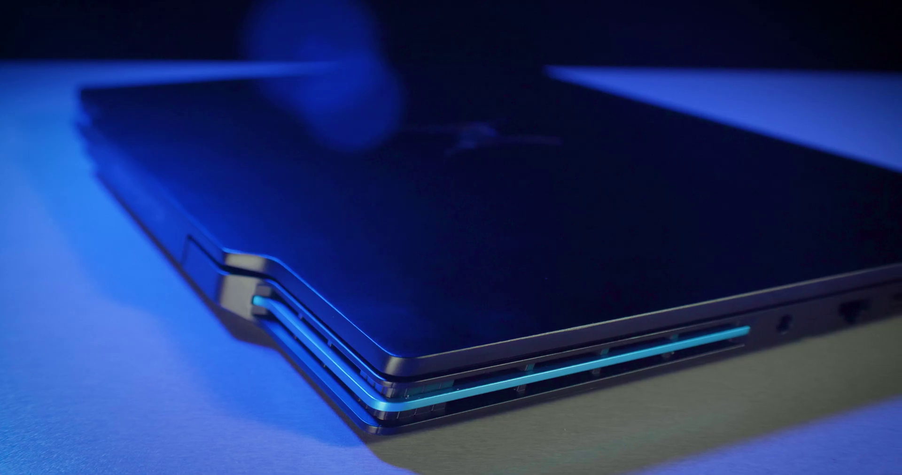
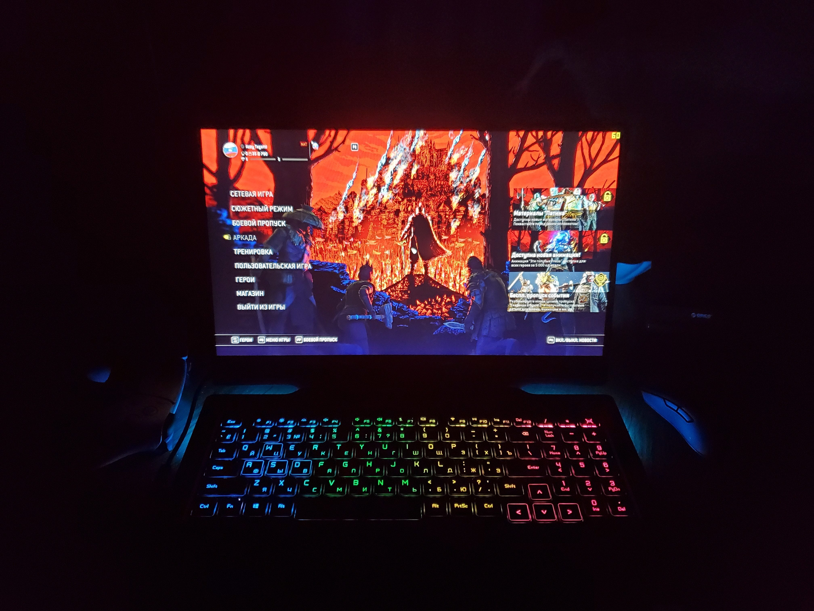
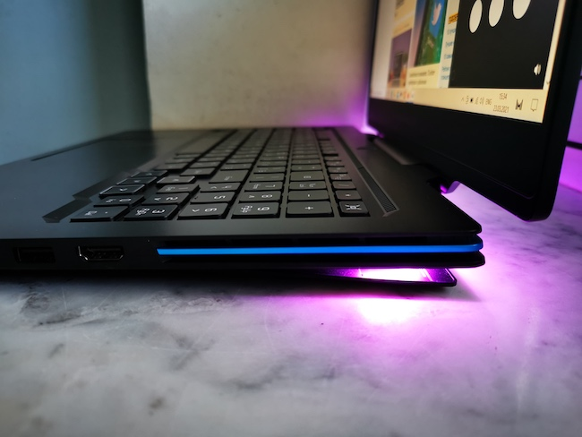
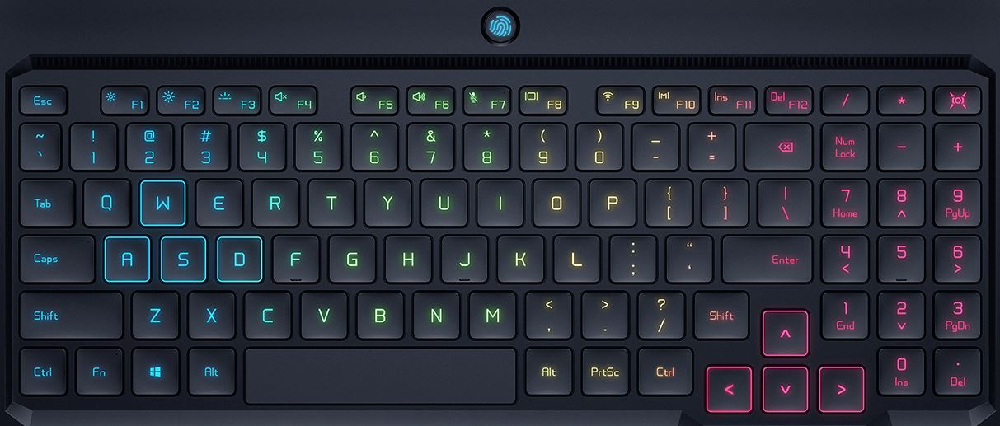
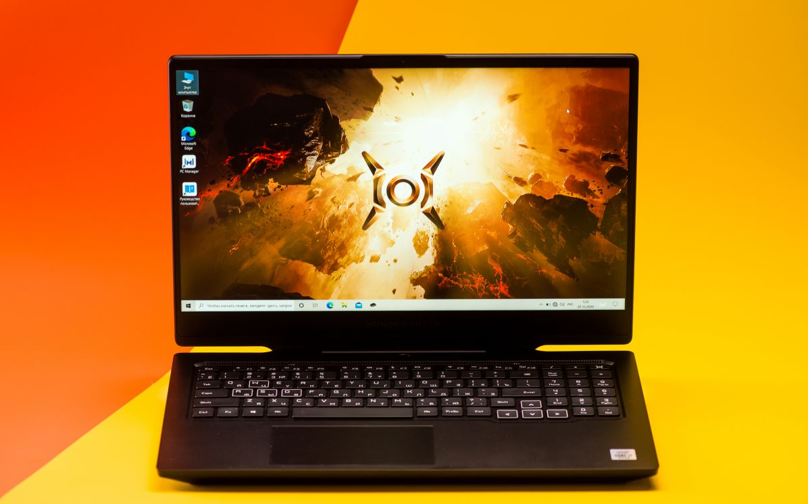
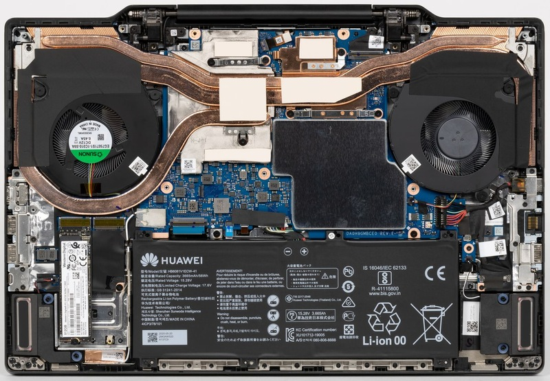

Друзья, когда я его получил, мои руки задрожали, а узнав цену так вообще захотелось присесть и выпить воды, благо я на тот момент сидел и под рукой был стакан с водой. 160к, ребята, - это вам не шутки.
Поэтому скажу сразу, этот аппарат не для рядового пользователя. Этому устройству нужен мастер своего дела. Он подойдет для человека, который, например, занимается тяжелой анимацией, или создает крутые спецэффекты, но в силу пандемии и профессии не может регулярно работать в стационарном режиме, например в офисе.
Так же этот ноутбук подойдет геймерам с блогерами, которые регулярно в разъездах, а контент пилить надо.
Вообще, данная модель поставляется в двух вариантах комплектации, на процессоре intel-i5 и на i7.
Мой вариант максимальный. По всем остальным характеристикам эти две комплектации идентичны. Единственное различие в цене. Вариант на i5 стоит на 20,000 рублей меньше.
Давайте рассмотрим этого красавчика ближе. Ноутбук имеет корпус из алюминиево-магниевого сплава, который должен быть очень легким, а также способствовать охлаждению. Вес ноутбука всего 2.5кг.
Дизайн ноутбука выполнен очень круто, а возможности механики корпуса, устроены так, чтобы помочь ноутбуку охлаждаться. На крышке сверху мы найдем круто выполненный логотип, напоминающий взгляд хищного зверя.
Как я уже говорил ранее справа находятся 4 разъема – HDMI 2.0, 2 USB порта 3.2 gen-1 и разъем USB Type-C с возможностью видео-вывода.
Ну а слева также 4 разъема, это – порт питания, интернет порт, USB 2.0 и аудиовыход 3.5 мм.
Открываем ноутбук, и видим, что нижняя часть немного приподнялась.
Именно это я и имел ввиду, когда говорил, что механика корпуса устроена на исключение перегрева, что в свою очередь дает возможность работы с ним на любой поверхности. То есть мы не сильно ошибемся если скажем, что у ноутбука есть встроенная подставка.
В этом открывшемся зазоре находятся два мощных охладительных вентилятора, а также, устройство имеет функцию самоочистки на автоматическом режиме, при активации которого, частички пыли выдуваются через специальные каналы.
Крышка с дисплеем имеет центральную петлю, что очень круто, так как ноутбук уже не имеет внешности стандартного заезженного внешнего вида.
В верхней части, по центру клавиатуры мы найдем кнопку питания, которая оснащена сканером отпечатка пальцев. Нажимаем ее и запускаем ноутбук.
При включении загорается 4-х зонная, настраиваемая RGB-подсветка клавиатуры и дополнительная круговая подсветка корпуса.
Кстати, логотип, выгравированный на задней крышке так же, сияет ярким синим цветом, плюс, на дисплее тоже является появляется око зверя.
Ноутбук стартует за считанные секунды, а если быть точным, я замерил время запуска до полной готовности и у меня вышло ровно 8 секунд. Все это благодаря тому, что установлено под капотом, но об этом чуть позже.
Вернемся к клавиатуре – это игровая полноразмерная клавиатура, на ней установлена эксклюзивная кнопка - HUNTER, которая позволяет легко переключаться между 3-я режимами работы подсветки, а она, напомню, имеет 4-х зонную RGB-подсветку, то есть под каждую зону по отдельности вы можете выбрать разный цвет.
Область WASD имеет собственную подсветку, пробел широкий, есть полноценная клавиатура с цифрами, а клавиши со стрелками были сдвинуты вниз, чтобы выделить их.
Клавиши имеют высоту в 1.8мм, и они имеют двойной изгиб, что позволяет комфортно проводить время в длительной печати. Пальцы не устают, и ко всему этому, вас сопровождает бесконечное удовольствие от нажатий. Не побоюсь сказать, что эта клавиатура по тактильным ощущениям посоревнуется с вашим котиком.
Клавиатура бесшумная, а если посмотреть на ноутбук в профиль, то можно заметить, что она практически незаметна, что подчеркивает то, что устройство имеет эргономичный, и революционный дизайн.
Но что меня впечатлило – это тачпад. Более точного мышкозаменителя я еще не встречал. Курсор контролируется очень легко, а если у вас достаточно ловкие руки, то вы сможете управиться с ним и в шутерах, таких как CS:GO, но это на тот редкий случай, если у вас по каким то причинам временно отсутствует мышь.
Ноутбук оснащен 16.1 дюймовым игровым дисплеем, это IPS-матрица, с разрешением FullHd, 1920х1080 пикселей, и имеет частоту обновления в 144 герца.
И вы только посмотрите какой он сочный, цвета насыщенные, а картинка имеет высокую детализацию. За счет высокой частоты обновления, просмотр контента на дисплее оставляет только положительные эмоции. Игровой процесс перед этим экраном заставляет вас чувствовать себя настоящим киберспортсменом. Все супер плавно, красиво и реалистично, а благодаря тонким рамкам, которые имеют ширину в 4.7 мм, создается впечатление погружения.
Хотел бы отметить еще то, что дисплей имеет хорошо проработанное матовое стекло. Благодаря ему, нагрузка на глаза не ощущается. За ним можно работать пока не придет усталость от проведённого времени в сидячем положении, так как моральная усталость вряд ли до вас доберется. Плюс к этому, даже если на дисплей будет падать свет, например, с окна, вам все еще будет хорошо видно содержимое дисплея. Максимальная яркость заявлена всего 300 нит, но я бы еще хотел отметить великолепные углы обзора. Даже при взгляде сильно сбоку картинка практически не тускнеет.
На верхней рамке мы найдем веб-камеру, это HD камера, и скажу я вам, выдает она весьма недурное качество, при хорошем освещении в комнате, она сойдет за отличную камеру для съемок.
Продолжаем и переходим к самому главному, собственно к тому, чем этот ноутбук так хорош. Характеристики!
Он оснащен процессором Intel Core i7 10 поколения i7-10750H, который работает на частоте 2.6 Ггц с возможностью разгона до 5Ггц, в паре с 16 Гб оперативной памяти DDR4-2666 + 512 Гб SSD накопитель, и закрепляется это все мощной видеокартой от Nvidia RTX 2060 TI.
Оооох друзья! Когда я начал им активно пользоваться, я влюбился по уши. Первоначальная настройка ноутбука - здесь все как на любом только купленном устройстве работающего на Windows 10.
Единственное отличие от остальных, при выборе защиты для входа в систему, вам предлагается отсканировать ваш отпечаток пальца и придумать сложный пин-код, как вариант входа. Встроенный в кнопку питания сканер, работает на ура, легким прикосновением пальца устройство мгновенно разблокируется.
Дальше я пошел в в Premiere Pro, мне стало интересно сколько по времени уйдет рендер тяжелого ролика со всевозможными пресетами и переходами в 4к.
И здесь мне стало стыдно за свой офисный ПК на i78700K + GTX1060, потому что я до этого считал его быстрым. Рендер видео на Хантере занял примерно в два раза меньше времени.
Кстати, на счет физических показателей устройства. Во время высокой нагрузки на систему, ноутбук начинал активно шуметь и немного греться на нижней части, но при простом использовании по типу печати текста или просмотра фильмов, он абсолютно бесшумный и холодный. Хотя стоит заметить, что шум от куллеров не давит на ухо и вполне приемлемый,, а выдуваемым воздухом, вполне можно высушить свои потные руки после катки. Вот кстати мой тест охлаждающей подставки на разных ноутбуках, в том числе и этом. Вы можете оценить, как Hunter ведёт себя во время стресс-тестов.
Производитель заявляет, что в автономном режиме, «охотник» проработает до пяти часов в средней нагрузке.
По моим тестам, мне хватило 2.5 часа активной игры от полного заряда аккумулятора. Когда аккумулятор был разряжен до 10%, автоматически был включен режим экономии заряда батареи, а игра начала немного притормаживать. Это привело к тому, что я закрыл игру и пошел заниматься важными делами, а его поставил на зарядку. Ноутбук заряжается до полного показателя батареи всего за час.
Из интересных возможностей сюда входит сверхбыстрое подключение Wi-Fi 6 которое позволяет снизить пинг на 75%. Под капотом присутствует двойной слот SSD M.2 для расширения объема памяти, а также возможность установки оперативной памяти до 32 Гб.
В общем, народ, у Honor, без сомнений, получился очень достойный аппарат. Да - дорого, очень дорого. Но здесь практически нет компромиссов. Топовый процессор, соответствующая видюха, пол тб SSD, 1 Гб ОЗУ - это хороший комплект.
Прибавим сюда великолепную эргономичность и способность ноутбука охлаждаться за счет свое механики и получаем на выходе этого красавца.
Однозначно достойная модель, которую я могу рекомендовать тем, кто может позволить себе её по финансам